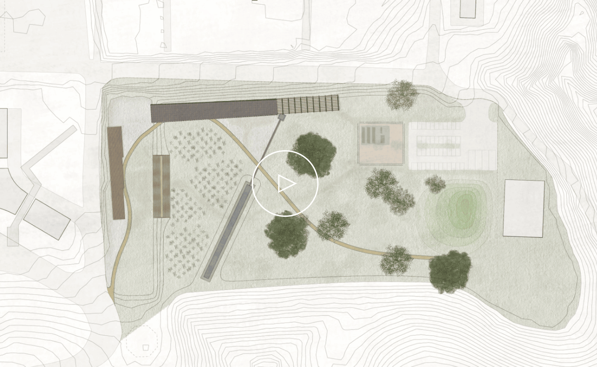

大地・建築・展示を一体化して
震災のストーリーを紡ぐ
震災のストーリーを紡ぐ
震災ミュージアムの目的は「自然の驚異を感じ、熊本地震を伝承すること」。 情報過多の社会において、現場で震災を体験していない来場者に、震災を強い記憶として刻むことは容易ではありません。そこでジオパークの中核に位置する本施設の立地を活かし、震災を広大な自然の中で捉え「広大な時間・空間のスケールの伸縮」を体験する施設として定義しました。 震災を観測した2016年4月14日21時26分という時間を示す、東海大学阿蘇キャンパス１号館の遺構内の時計を展示のゴールとして、太古から未来、マクロからミクロへと視点のスケールを変えながら震災のストーリーを紡ぐ体験設計をチームで行いました。